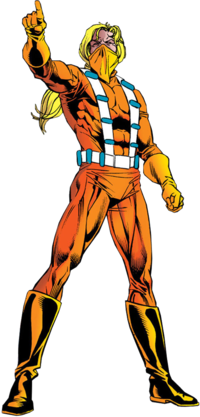
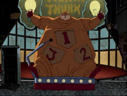

Cluemaster
From Wikipedia, the free encyclopedi
The Cluemaster (Arthur Brown) is a supervillain appearing in American comic books published by DC Comics, commonly as an adversary of the superhero Batman as well as a recurring enemy of Tim Drake, the third Robin.[1] Cluemaster first appeared in Detective Comics #351 (May 1966) and was created by Gardner Fox and Carmine Infantino.
A failed game show host, the character became a criminal who leaves clues to his crimes, but unlike the Riddler's clues, they are not in the form of riddles. He is also the father of Stephanie Brown who became the vigilante Spoiler and later the fourth Robin and third Batgirl.[2]
Cluemaster appeared in the second season of the Arrowverse series Batwoman, portrayed by Rick Miller. Ethan Embry portrayed Arthur Brown in Gotham Knights.
Character Biography
The Cluemaster starts his criminal campaign by a daring but unsuccessful attempt to learn Batman's identity and gain a fighting edge. [2][4] He returns to Gotham for a rematch with Batman,[5] then appears in several supervillain crowd scenes over the years.[6]
With several other villains, Cluemaster becomes a member of the Injustice League, a team of out-of-luck supervillains who, when banding together, become even less successful than they have been in their individual careers.[7] The Injustice League have been defeated time and again by the Justice League International, at least when they are not making laughingstocks of themselves. Trying to reform, the members later become the core of the equally laughable hero team Justice League Antarctica.[8] They help out the Justice League when JLI liaison Maxwell Lord lies in a coma,[9] but again later reform as the Injustice League as henchmen of Sonar.[10]
Cluemaster reappears in Detective Comics #647 by Chuck Dixon and Tom Lyle. In this three-issue story, Cluemaster has reformed and been released from Blackgate Penitentiary. Cured of his compulsion to leave clues, Cluemaster originally joins a gang and plans their heists in exchange for 10 percent of their winnings. He later kills the leader by suffocating him with a strong polymer over his mouth and nose, and begins to plan a master heist.
During this time, it is revealed Arthur Brown has a daughter named Stephanie through a woman named Crystal Brown, but rarely spends any time with her due to long periods of incarceration. Stephanie is furious when she discovers that he has returned to crime without his need to leave clues behind. Making a costume for herself, she calls herself The Spoiler, finds out her father's plans, and leaves clues so that the police and Batman can stop him.[11] Robin spots Spoiler on the rooftops during a police bust of Cluemaster's apartment and unmasks her, though she incapacitates Robin by hitting him in the face with a brick. Robin tracks her down and Batman, Robin and Spoiler set a plan in motion to take down Cluemaster. Spoiler was forbidden from going to the bust because she was only motivated by revenge. Catching Cluemaster at his mall heist whilst he hauls a giant glass canister of money away by air, Stephanie is then held hostage by Cluemaster atop the canister, holding a vial of acid to her face as Batman tries to stop him. Batman tells Cluemaster to stop and Cluemaster, thinking Batman will only lecture him about how it is morally wrong to disfigure a child, is taken aback when Batman simply reveals Spoiler is his daughter. Spoiler uses the shock of the revelation to gain the upper hand and uses one of the chains attached to the Gunship lifting the canister to strangle Cluemaster, but Batman prevents this. Cluemaster is taken back to Blackgate.[2]
Each time the Cluemaster escapes or start some new plan, Stephanie dons her costume again to foil him. Eventually, she realizes she enjoys being a hero, and begins regular patrols as Spoiler. For a brief period of time she even replaces her boyfriend, Tim Drake, as Robin.
Apparent Death
Cluemaster and his teammates in the Injustice League volunteer to join the second Suicide Squad, a group sanctioned by the US government, in return for a full pardon of his crimes. The Cluemaster also hopes to make Stephanie proud of him.[2] During the mission, which involves dealing with terrorists and a lovesick genetic experiment, Cluemaster sees his friends, Big Sir, Clock King and Multi-Man die (though Multi-Man has the power to be reborn again). In the resulting chaotic battle, Cluemaster seemingly saves Major Disaster's life twice, though the Major admits the situation was confusing. Cluemaster is seen shot many times through the chest. He survives this incident, with a year's recuperation in the hospital and many, many scars. He is encouraged by thoughts of his daughter.[12]
When he gets out and discovers that his daughter has been killed, he takes on the secret identity Aaron Black and creates the "Campaign for Culpability", blaming Batman for his involvement in Stephanie's death, saying that she was not the first child working with Batman to die, and that Batman should be brought to justice.
It is later revealed that Stephanie survived the incident that everyone believed had killed her, and spent some time recuperating overseas.[13]
Robin (vol. 2) #177 was planned by Chuck Dixon intended to feature Cluemaster, but Dixon's abrupt exodus from DC meant the issue was scrapped.
Cluemaster finally reappears after Stephanie Brown has become the new Batgirl. He is revealed to be the man who has been funding the Reapers, a group of young supervillains who have been battling Batgirl.[14]
The New 52
In September 2011, The New 52 rebooted DC's continuity. In this new timeline, as part of the Forever Evil storyline, Cluemaster is among the villains that the Crime Syndicate of America recruited to join the Secret Society of Super Villains.[15]
Cluemaster appears as a villain in the Batman: Eternal series, plotting with several other minor villains when interrupted by his daughter, Stephanie Brown, who overhears part of the plotting by her father and his associates. This is Cluemaster's first full appearance in the New 52 continuity.[16] He is later revealed to be the final mastermind behind the systematic attack on Batman by various villains; inspired by an old theory he had when talking with other lower-grade villains that they could take action while Batman was occupied with the bigger criminals, he sent out invitations to other big-league foes to take action after the fall of Commissioner Gordon, and then all he had to do was slip a basic mind-control drug into Gordon's coffee to make him see a threat that wasn't there and let the other villains do what they wanted, guessing correctly that Batman would never think to look at a small-timer when so many bigger villains were playing a part in the scheme. Although Brown manages to capture and unmask Batman, Bruce is able to escape his bonds and fight back, but he has taken such a beating over the course of the storyline that Cluemaster manages to overpower him, only for Lincoln March to show up behind Cluemaster and slit his throat,[17] revealing that he funded Cluemaster's plans solely so that he could kill Batman at this point in secret.[18]
DC Rebirth
In 2016, DC Comics implemented another relaunch of its books called "DC Rebirth" which restored its continuity to a form much as it was prior to "The New 52". During "The War of Jokes and Riddles", Cluemaster is seen as a member of Joker's team.[19] After Batman joins the war on the side of the Riddler and begins taking out Joker’s allies one by one, Cluemaster suggests to Kite Man that they let themselves be beaten rather than flee and face the wrath of both kingpins. However, he is then gassed by the Scarecrow, one of Riddler’s allies, and taken out of the conflict.
In a three-issue story arc beginning in Batgirls #13 (February 2023) Cluemaster kidnaps Stephanie but is thwarted by Cassandra Cain.
Powers and Abilities
Unlike most of Batman's villains, Cluemaster is completely sane, which gives him a unique relationship with Batman. Cluemaster has no metahuman powers or abilities. He has a number of plasti-glass pellets attached to the front of his uniform. The pellets contain various offensive weaponry including: blinding incendiary flares, smoke, incapacitating gas, and explosives.
Other Media
Animation
Arthur Brown / Cluemaster appears in The Batman, voiced by Glenn Shadix as an adult and by Kath Soucie as a child. This version was a spoiled, self-entitled, yet brilliant prodigy with an inferiority complex and Peter Pan syndrome. After losing on the game show Think Thank Thunk following a twelve-week champion run and failed attempt by his mother to sue everyone involved on the grounds that the show was rigged, Brown dropped out of school and secluded himself in her home for the next twenty years to plot revenge. All the while, he subsisted on the lifetime supply of Kremelo chocolate bars he won on Think Thank Thunk, becoming obese and durable.
Cluemaster makes a cameo appearance in the Batman: The Brave and the Bold episode "A Bat Divided!".
Live-Action
Arthur Brown appears in the Batwoman episode "I'll Give You a Clue", portrayed by Rick Miller. Five years prior, this version was the host of the game show Quiz Bowl before he was fired. He threatened to destroy the studio, but was arrested by Sophie Moore of the Crows security firm.
Arthur Brown appears in the Gotham Knights episode "Daddy Issues", portrayed by Ethan Embry.[22], Similarly to the aforementioned Batwoman incarnation, this version was the host of the game show Quiz Bowl.